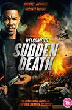

Michael Jai White is an American actor, director, and martial artist. Michael is known for his skill in many different martial arts forms in which he displays in each one of his movies. Michael was born in Brooklyn, New York, on November 10, 1967, Michael was raised between impoverished Bridgeport and wealthy Westport, Connecticut, by the age of 14 he had already gained the reputation of a street fighter and his hatred for bullies caused him to seek violence.
| Accomplishments | |||||||||
|---|---|---|---|---|---|---|---|---|---|
| 1. | Michael was the first African American o portray a major comic book superhero in a major motion picture | ||||||||
| 2. | Michael Jai White is a Black Belt in seven different styles including Shotokan, Taekwondo, Kobudo, Goju Ryu (under Master Eddie Morales), Tang Soo Do, Wushu and Kyokushin, with a specific focus in Kyokushin | ||||||||
| 3. | Michael was honored with the Fists of Legends Decade Award at the Urban Action Showcase & Expo at HBO | ||||||||
